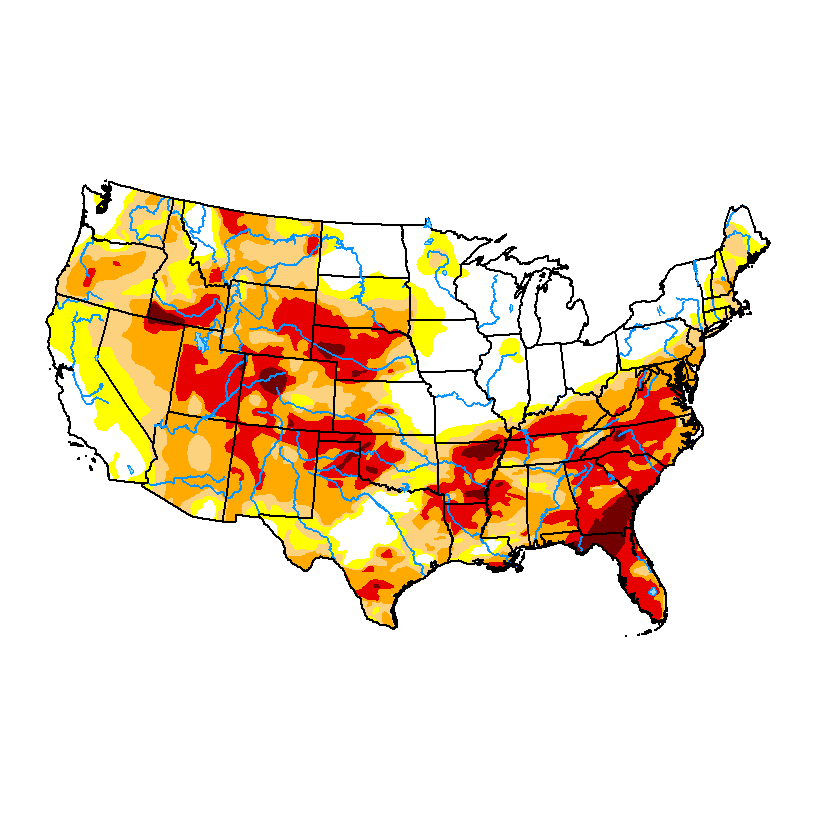

Map released: May 21, 2026
Data valid: May 19, 2026

The data cutoff for Drought Monitor maps is each Tuesday at 8 a.m. EDT.
The maps, which are based on analysis of the data, are released each Thursday at
8:30 a.m. Eastern Time.
Intensity and Impacts
None
D1 (Moderate Drought)
D3 (Extreme Drought)
No Data
D0 (Abnormally Dry)
D2 (Severe Drought)
D4 (Exceptional Drought)
Delineates dominant impacts
S — Short-term impacts, typically less than 6 months (agriculture, grasslands)
L — Long-term impacts, typically greater than 6 months (hydrology, ecology)
SL — Short- and long-term impacts
This Week's Summary
During the week, the contiguous United States exhibited significant regional temperature anomalies driven by a highly amplified synoptic pattern. A pronounced unseasonable cold air mass influenced the Northern Plains, Upper Midwest, and Northeast, depressing temperatures 5°F to 15°F below normal across the Dakotas, Minnesota, New York, and Pennsylvania. Conversely, the Southwest and South Texas experienced anomalous warmth, with maximum temperatures exceeding 90°F.